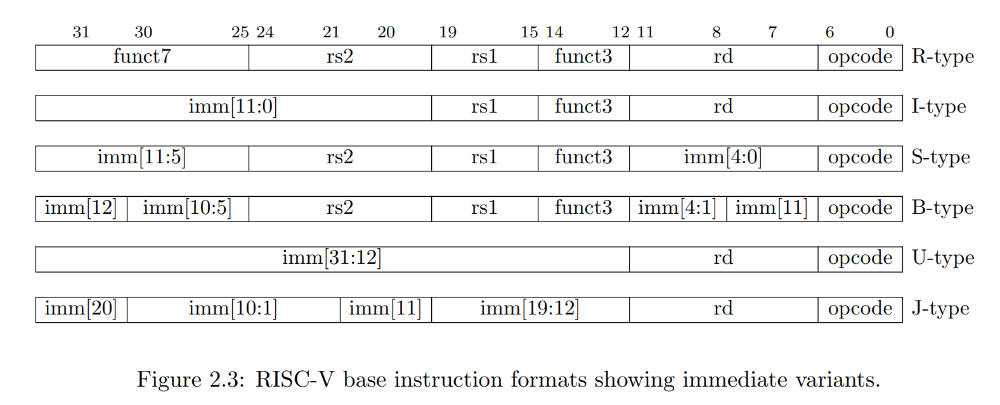

02 riscv
汇编语言入门(GNU)
- 一个完整的RISC-V汇编程序有多条
语句(statement)组成
- 一条典型的RISC-V汇编语句由3部分组成
statement = [label:][operation][comment]
label:GNU汇编中，任何以冒号:结尾的标识符都被认为是一个标号。
operation可以有以下多种类型：
instruction指令：直接对应二进制机器指令的字符串pseudo-instruction伪指令，类似与封装一个功能函数或者包含多条指令的脚本directive指示/伪操作，以.开头，通知汇编器如何控制代码产生等，不对应具体的指令macro: 采用 .macro/.endm 自定义的宏
comment：常用方式: #开始到当前行结束。
First RISC-V Assemble Sample.macro do_nothing # directive
nop # pseudo-instruction
nop # pseudo-instruction
.endm # directive
.text # directive
.global _start # directive
_start: # Label
li x6, 5 # pseudo-instruction
li x7, 4 # pseudo-instruction
add x5, x6, x7 # instruction
do_nothing # Calling macro
stop: j stop # statement in one line
.end # End of file
RISC-V汇编指令总览
- RISC-V汇编指令操作对象
- 寄存器
- 32个通用寄存器，x0~x31 ( RV32I 通用寄存器组)
- Hart 在执行算术逻辑运算时所操作的数据必须直接来自寄存器
- 内存
- Hart 可以执行在寄存器和内存之间的数据读写操作；
- 读写操作使用
字节（Byte）为基本单位进行寻址；
- RV32 可以访问最多 2^32 个字节的内存空间。
- RISC-V汇编指令编码格式
- 指令长度：ILEN1= 32 bits (RV32I)
- 指令对齐：IALIGN = 32 bits (RV32I)
- 32 个 bit 划分成不同的
“域（field）”
funct3/funct7和opcode一起决定最终的指令类型- 指令在内存中按照
小端序排列

汇编指令练习
- 对sub执行反汇编，查看
sub x5, x6, x7这条汇编指令对应的机器指令的编码，并对照RISC-V的specification解析该条指令的编码
- 现知道某条RISC-V的机器指令在内存中的值为
b3 05 95 00, 从左往右从低地址到高地址，单位为字节，请将其翻译为对应的汇编指令。
算术运算指令 (Arithmetic Instructions)
| 指令 |
格式 |
语法 |
描述 |
例子 |
| AND |
R-type |
ADD RD,RS1,RS2 |
RS1和RS2的值相加，结果保存到RD |
add x5,x6,x7 |
| SUB |
R-type |
SUB RD,RS1,RS2 |
RS1的值减去RS2的值，结果保存到RD |
sub x5,x6,x7 |
| ADDI |
I-type |
ADDI RD,RS1,IMM |
RS1的值和IMM相加，结果保存到RD |
addi x5,x6,100 |
| LUI |
U-type |
LUI RD,IMM |
构造一个32bit的数，高20bit存放IMM，低12位清零。结果保存到RD |
lui x5, 0x12345 |
| AUIPC |
U-type |
AUIPC RD,IMM |
构造一个32bit的数，高20bit存放IMM，低12位清零。结果和PC相加后保存到RD |
auipc x5, 0x12345 |
还有由基本的算术运算指令衍生的伪指令
| 指令 |
等价指令 |
语法 |
描述 |
例子 |
| LI |
LUI + ADDI |
LI RD,IMM |
将立即数IMM加载到RD中 |
li x5, 0x12345678 |
| LA |
AUIPC + ADDI |
LA RD,LABEL |
为RD加载一个地址值 |
la x5, label |
| NEG |
SUB RD,x0,RS |
NEG RD,RS |
对RS中的值取反并将结果存放在RD中 |
neg x5, x6 |
| MV |
ADDI RD,RS,0 |
MV RD,RS |
将RS中的值拷贝到RD中 |
mv x5, x6 |
| NOP |
ADDI x0,x0,0 |
NOP |
什么也不做 |
nop |
ADD
| 指令 |
格式 |
语法 |
描述 |
例子 |
| AND |
R-type |
ADD RD,RS1,RS2 |
RS1和RS2的值相加，结果保存到RD |
add x5,x6,x7 |
具体编码规则如下：
| funct7 |
rs2 |
rs1 |
funct3 |
rd |
opcode |
| 0000000 |
x7 |
x6 |
000 |
x5 |
0110011 |
| 0000000 |
00111 |
00110 |
000 |
00101 |
0110011 |
- 二进制
0000000-00111-00110-000-00101-0110011转为16进制为0x007302B3，即为可执行文件中的二进制编码
- 注意编译生成的可执行文件的字节序问题：
00 73 02 B3 -> B3 02 73 00
- 示例汇编代码：
# Add
# Format:
# ADD RD, RS1, RS2
# Description:
# The contents of RS1 is added to the contents of RS2 and the result is
# placed in RD.
.text # Define beginning of text section
.global _start # Define entry _start
_start:
li x6, 1 # x6 = 1
li x7, 2 # x7 = 2
add x5, x6, x7 # x5 = x6 + x7
stop:
j stop # Infinite loop to stop execution
.end # End of file
二进制补码？
- 无符号数 v.s. 有符号数
- 有符号数在计算中的表示：二进制补码(two's complement)
- 符号扩展(Sign extension) v.s. 零扩展(Zero extension)
- 口诀：取绝对值、转二进制、取反+1
- 例如：
-4 取绝对值、转二进制 -> 100 取反+1 -> 011+1 100
- 符号扩展
11111-100
- 零扩展
00000-100
# Add
# Format:
# ADD RD, RS1, RS2
# Description:
# The contents of RS1 is added to the contents of RS2 and the result is
# placed in RD.
.text # Define beginning of text section
.global _start # Define entry _start
_start:
li x6, 1 # x6 = 1
li x7, -2 # x7 = -2
add x5, x6, x7 # x5 = x6 + x7
stop:
j stop # Infinite loop to stop execution
.end # End of file
SUB(Substract)
| 指令 |
格式 |
语法 |
描述 |
例子 |
| SUB |
R-type |
SUB RD,RS1,RS2 |
RS1的值减去RS2的值，结果保存到RD |
sub x5,x6,x7 |
# Substract
# Format:
# SUB RD, RS1, RS2
# Description:
# The contents of RS2 is subtracted from the contents of RS1 and the result
# is placed in RD.
.text # Define beginning of text section
.global _start # Define entry _start
_start:
li x6, -1 # x6 = -1
li x7, -2 # x7 = -2
sub x5, x6, x7 # x5 = x6 - x7
stop:
j stop # Infinite loop to stop execution
.end # End of file
| imm[11:0] |
rs1 |
funct3 |
rd |
opcode |
| 0000 0000 0000 |
x6 |
000 |
x5 |
0110011 |
| 0000 0000 0000 |
00110 |
000 |
00101 |
0110011 |
| imm[31:12] |
rd |
opcode |
| 0000 0000 0000 0000 0000 |
x5 |
0110111 |
| 0000 0000 0000 0000 0000 |
00101 |
0110111 |
| imm[31:12] |
rd |
opcode |
| 0000 0000 0000 0000 0000 |
x5 |
0110111 |
| 0000 0000 0000 0000 0000 |
00101 |
0110111 |
练习
- 对sub执行反汇编，查看
sub x5, x6, x7这条汇编指令对应的机器指令的编码，并对照RISC-V的specification解析该条指令的编码
- 现知道某条RISC-V的机器指令在内存中的值为
b3 05 95 00, 从左往右从低地址到高地址，单位为字节，请将其翻译为对应的汇编指令。
Reference